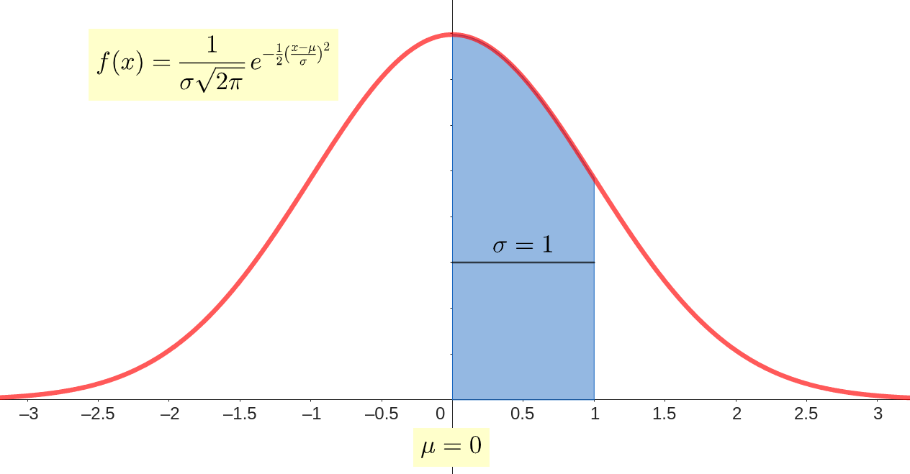
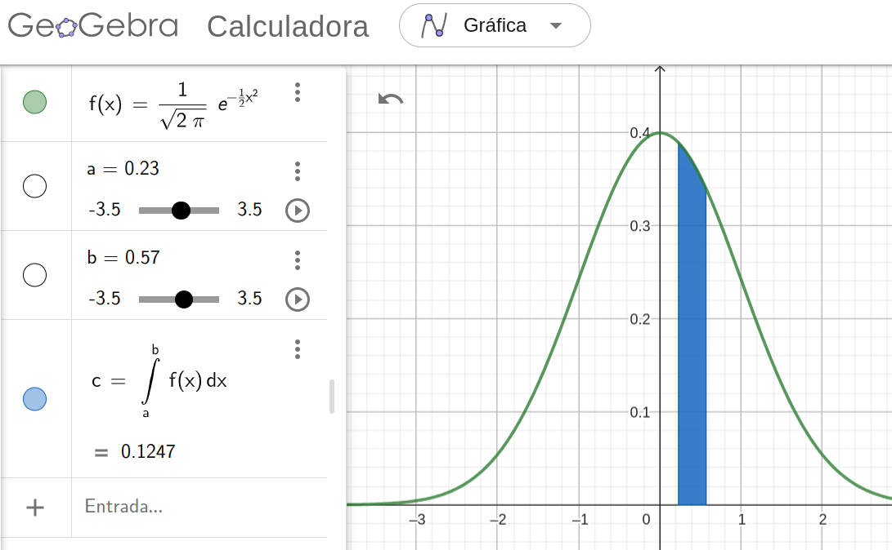
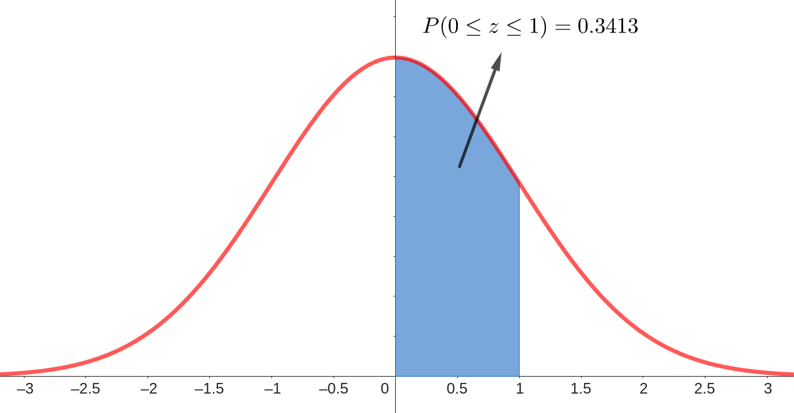

As medidas de tendência central são ferramentas estatísticas que ajudam a descrever um conjunto de dados, identificando valores que representam o "centro" ou ponto de equilíbrio dos dados. As três medidas mais comuns são a média aritmética, a mediana e a moda. Vamos explorar cada uma delas com exemplos práticos.
A moda é o valor que mais se repete em um conjunto de dados. Um conjunto de dados pode ter uma ou mais modas, ou até mesmo não ter nenhuma, se todos os valores aparecerem com a mesma frequência.
Exemplo 1: Considere o seguinte conjunto de dados:
4,2,5,8,6,4,7,4,3
Exemplo 2: Outro conjunto de dados:
1,2,2,3,4,4,5
A mediana é o valor que separa a metade superior da metade inferior de um conjunto de dados ordenado. Se o número de observações for ímpar, a mediana é o valor do meio. Se for par, a mediana é a média dos dois valores do meio.
Exemplo 1: Conjunto de dados (número ímpar de elementos):
7,3,1,5,9
Exemplo 2:Conjunto de dados (número par de elementos):
10,3,6,2
A média aritmética (\( \bar{x} \)) é a soma de todos os valores (\(x_i\)) dividida pelo número total de valores (\(n\)) e pode ser escrito através da relação abaixo:
\[ \bar{x} = \frac{\sum_{i=0}^n x_i}{n} \]
Exemplo 1: Conjunto de dados:
2,4,6,8,10
Exemplo 2: Outro conjunto de dados:
5,15,25
Enquanto as medidas de tendência central (como a média, mediana e moda) nos ajudam a entender o "centro" dos dados, o desvio-padrão é uma medida de dispersão que nos informa o quão dispersos ou concentrados estão os dados em torno da média. Em outras palavras, ele nos mostra o quão distante os dados estão, em média, da média aritmética.
O desvio-padrão quantifica a variação ou dispersão de um conjunto de dados. Um desvio-padrão baixo indica que os dados tendem a estar próximos da média, enquanto um desvio-padrão alto indica que os dados estão espalhados em uma ampla gama de valores.
Existem duas fórmulas principais para calcular o desvio-padrão:
\[ s = \sqrt{\frac{1}{n-1} \sum_{i=1}^{n} (x_i - \overline{x})^2} \]
onde,\[\sigma = \sqrt{\frac{1}{N} \sum_{i=1}^{N} (x_i - \overline{x})^2}\]
onde,Exemplo Prático: Vamos calcular o desvio-padrão de um conjunto de dados para entender melhor o conceito. Conjunto de dados:
2,4,4,4,5,5,7,9
Conclusão: O desvio-padrão da amostra é aproximadamente 2,14, enquanto o da população é 2.
A tabela de frequências é uma ferramenta estatística que organiza os dados em categorias ou intervalos, facilitando a visualização e interpretação de como os dados se distribuem. Ela é muito útil quando temos um grande conjunto de dados e queremos entender a frequência com que certos valores ocorrem.
...continua...
A função densidade de probabilidade (FDP) descreve como a probabilidade é distribuída sobre os possíveis valores de uma variável aleatória contínua. Para uma variável aleatória \(X\), a função densidade de probabilidade \(f(x)\) é dada por:
$$ P(a \leq X \leq b) = \int_a^b f(x)\,dx $$
A distribuição normal é uma das distribuições de probabilidade mais utilizadas em estatística. Sua forma característica de sino é simétrica em torno da média \( \mu \), e a maior parte dos dados está concentrada próximo dessa média. Ela é descrita pela seguinte função densidade de probabilidade (FDP):
\[ f(x) = \frac{1}{\sigma \sqrt{2\pi}} e^{-\frac{(x - \mu)^2}{2\sigma^2}} \]
Aqui, \( \mu \) é a média da distribuição, \( \sigma \) é o desvio padrão, e \( x \) é o valor da variável aleatória. Na distribuição normal padrão, temos \( \mu = 0 \) e \( \sigma = 1 \), simplificando a fórmula.
O gráfico da função acima pode ser visto abaixo:

O score-z é uma medida de quantos desvios padrão um determinado valor \(X\) está distante da média \( \mu \). Ele é calculado usando a fórmula:
\[ z = \frac{X - \mu}{\sigma} \]
O valor \( z \) padroniza a variável \( X \), convertendo-a em termos de desvios padrão. Isso nos permite utilizar a tabela de distribuição normal para calcular probabilidades.
A tabela de distribuição normal acumulada a partir da média mostra a probabilidade de a variável \( Z \), com distribuição normal padrão, estar entre a média \( \mu = 0 \) e um valor específico de \( z \). Ou seja, a tabela fornece:
\[ P(0 \leq Z \leq z) \]
Por exemplo, para \( z = 1.23 \), a tabela pode indicar:
\[ P(0 \leq Z \leq 1.23) = 0.3907 \]
Isso significa que há uma probabilidade de 39,07% de que a variável \( Z \) esteja entre 0 e 1.23 desvios padrão da média.
Devido à simetria da distribuição normal, a probabilidade de \( Z \) estar entre \( 0 \) e um valor negativo de \( z \) é a mesma de \( 0 \) até o valor positivo correspondente:
\[ P(0 \leq Z \leq z) = P(0 \leq Z \leq -z) \]
Por exemplo, \( P(0 \leq Z \leq -1.23) = P(0 \leq Z \leq 1.23) = 0.3907 \).
Com essa tabela, podemos calcular várias probabilidades. Por exemplo, para calcular a probabilidade de \( Z \) estar entre dois valores \( z_1 \) e \( z_2 \) (ambos positivos), podemos subtrair as probabilidades:
\[ P(z_1 \leq Z \leq z_2) = P(0 \leq Z \leq z_2) - P(0 \leq Z \leq z_1) \]
Essas fórmulas e tabelas são amplamente usadas em estatística para determinar probabilidades e para realizar testes de hipóteses baseados em distribuições normais.
Exemplo: Calcule a probabilidade \(P(0,23 \le z \le 0,57) \)
O primeiro passo é fazer o desenho da situação. Logo:

Olhando para a tabela os valores de 0,23 e 0,57 temos 0,0910 e 0,2157. Para determinar a probabilidade em questão basta fazer a subtração abaixo:
\[ P(0,23 \le z \le 0,57)=0,2157-0,0910=0,1247 \]
O teste de hipóteses sobre a média é uma ferramenta estatística utilizada para verificar se uma amostra representa uma população com uma média específica. Quando se trabalha com distribuições normais de probabilidades, é possível utilizar testes paramétricos para avaliar a significância da média amostral.
\[ \begin{aligned} H_0: \mu &= \mu_0 \\ H_1: \mu &\neq \mu_0 \end{aligned} \]
\( H_0 \) é chamada de hipótese nula e \( H_1 \) a hipótese alternativa
\[ \begin{aligned} z &= \frac{\overline{x} - \mu_0}{\sigma / \sqrt{n}} \\ t &= \frac{\overline{x} - \mu_0}{s / \sqrt{n}} \end{aligned} \]
\[ \begin{aligned} \text{Se } z &\gt z_{\alpha/2}, \text{ rejeite } H_0 \\ \text{Se } z &\lt z_{\alpha/2}, \text{ não rejeite } H_0 \end{aligned} \]
EXEMPLO: Suponha que você queira verificar se a média de altura de uma população é igual a 175 cm. Você coleta uma amostra de 100 indivíduos e encontra uma média de 180 cm com desvio padrão de 5 cm.
\[ \begin{aligned} H_0: \mu &= 175 \\ H_1: \mu &\neq 175 \\ \alpha &= 0,05 \\ z &= \frac{180 - 175}{5 / \sqrt{100}} = 10 \\ z_{\alpha/2} &= 1,96 \end{aligned} \]
Como \( z > z_{\alpha/2} \), rejeite \( H_0 \).
Conclusão: A média de altura da população é estatisticamente diferente de 175 cm.
EXEMPLO: Um fabricante de aparelhos celulares afirma que a duração média da bateria desses aparelhos nos primeiros 12 meses de uso é de 120 horas. Analisando uma amostra de 20 aparelhos, obteve-se uma média de duração de 113 horas, com desvio padrão de 10 horas. Verifique se a afirmação é verdadeira, utilizando um nível de confiança de 95% bicaudal.
Utilizando a tabela de distribuição t student, definem-se os pontos críticos através do grau de liberdade (19) e o nível de confiança (95%).
Nesse caso, os pontos críticos são \( \pm 2,093 \), ou seja, \(P(-2,093 \lt t \lt 2,093) \). Se o valor de t estiver dentro desses limites a afirmação é verdadeira.
Na sequência calcula-se o valor de t para a amostra:
\[ t=\frac{\overline{X}-\mu}{s \over \sqrt{n}}=\frac{113-120}{10 \over \sqrt{20}}=-3,130 \]
Conclusão: Como \(t = -3,130 \), encontra-se FORA dos limites críticos, \(P(-2,093 \lt t \lt 2,093)\), a afirmação do fabricante de celular que a duração média da sua bateria é de 120 horas, a um nível de confiança de 95%, não é verdadeira.

| Z | 0,00 | 0,01 | 0,02 | 0,03 | 0,04 | 0,05 | 0,06 | 0,07 | 0,08 | 0,09 |
|---|---|---|---|---|---|---|---|---|---|---|
| 0,0 | 0.0000 | 0.0040 | 0.0080 | 0.0120 | 0.0160 | 0.0199 | 0.0239 | 0.0279 | 0.0319 | 0.0359 |
| 0,1 | 0.0398 | 0.0438 | 0.0478 | 0.0517 | 0.0557 | 0.0596 | 0.0636 | 0.0675 | 0.0714 | 0.0753 |
| 0,2 | 0.0793 | 0.0832 | 0.0871 | 0.0910 | 0.0948 | 0.0987 | 0.1026 | 0.1064 | 0.1103 | 0.1141 |
| 0,3 | 0.1179 | 0.1217 | 0.1255 | 0.1293 | 0.1331 | 0.1368 | 0.1406 | 0.1443 | 0.1480 | 0.1517 |
| 0,4 | 0.1554 | 0.1591 | 0.1628 | 0.1664 | 0.1700 | 0.1736 | 0.1772 | 0.1808 | 0.1844 | 0.1879 |
| 0,5 | 0.1915 | 0.1950 | 0.1985 | 0.2019 | 0.2054 | 0.2088 | 0.2123 | 0.2157 | 0.2190 | 0.2224 |
| 0,6 | 0.2257 | 0.2291 | 0.2324 | 0.2357 | 0.2389 | 0.2422 | 0.2454 | 0.2486 | 0.2517 | 0.2549 |
| 0,7 | 0.2580 | 0.2611 | 0.2642 | 0.2673 | 0.2704 | 0.2734 | 0.2764 | 0.2794 | 0.2823 | 0.2852 |
| 0,8 | 0.2881 | 0.2910 | 0.2939 | 0.2967 | 0.2995 | 0.3023 | 0.3051 | 0.3078 | 0.3106 | 0.3133 |
| 0,9 | 0.3159 | 0.3186 | 0.3212 | 0.3238 | 0.3264 | 0.3289 | 0.3315 | 0.3340 | 0.3365 | 0.3389 |
| 1,0 | 0.3413 | 0.3438 | 0.3461 | 0.3485 | 0.3508 | 0.3531 | 0.3554 | 0.3577 | 0.3599 | 0.3621 |
| 1,1 | 0.3643 | 0.3665 | 0.3686 | 0.3708 | 0.3729 | 0.3749 | 0.3770 | 0.3790 | 0.3810 | 0.3830 |
| 1,2 | 0.3849 | 0.3869 | 0.3888 | 0.3907 | 0.3925 | 0.3944 | 0.3962 | 0.3980 | 0.3997 | 0.4015 |
| 1,3 | 0.4032 | 0.4049 | 0.4066 | 0.4082 | 0.4099 | 0.4115 | 0.4131 | 0.4147 | 0.4162 | 0.4177 |
| 1,4 | 0.4192 | 0.4207 | 0.4222 | 0.4236 | 0.4251 | 0.4265 | 0.4279 | 0.4292 | 0.4306 | 0.4319 |
| 1,5 | 0.4332 | 0.4345 | 0.4357 | 0.4370 | 0.4382 | 0.4394 | 0.4406 | 0.4418 | 0.4429 | 0.4441 |
| 1,6 | 0.4452 | 0.4463 | 0.4474 | 0.4484 | 0.4495 | 0.4505 | 0.4515 | 0.4525 | 0.4535 | 0.4545 |
| 1,7 | 0.4554 | 0.4564 | 0.4573 | 0.4582 | 0.4591 | 0.4599 | 0.4608 | 0.4616 | 0.4625 | 0.4633 |
| 1,8 | 0.4641 | 0.4649 | 0.4656 | 0.4664 | 0.4671 | 0.4678 | 0.4686 | 0.4693 | 0.4699 | 0.4706 |
| 1,9 | 0.4713 | 0.4719 | 0.4726 | 0.4732 | 0.4738 | 0.4744 | 0.4750 | 0.4756 | 0.4761 | 0.4767 |
| 2,0 | 0.4772 | 0.4778 | 0.4783 | 0.4788 | 0.4793 | 0.4798 | 0.4803 | 0.4808 | 0.4812 | 0.4817 |
| 2,1 | 0.4821 | 0.4826 | 0.4830 | 0.4834 | 0.4838 | 0.4842 | 0.4846 | 0.4850 | 0.4854 | 0.4857 |
| 2,2 | 0.4861 | 0.4864 | 0.4868 | 0.4871 | 0.4875 | 0.4878 | 0.4881 | 0.4884 | 0.4887 | 0.4890 |
| 2,3 | 0.4893 | 0.4896 | 0.4898 | 0.4901 | 0.4904 | 0.4906 | 0.4909 | 0.4911 | 0.4913 | 0.4916 |
| 2,4 | 0.4918 | 0.4920 | 0.4922 | 0.4925 | 0.4927 | 0.4929 | 0.4931 | 0.4932 | 0.4934 | 0.4936 |
| 2,5 | 0.4938 | 0.4940 | 0.4941 | 0.4943 | 0.4945 | 0.4946 | 0.4948 | 0.4949 | 0.4951 | 0.4952 |
| 2,6 | 0.4953 | 0.4955 | 0.4956 | 0.4957 | 0.4959 | 0.4960 | 0.4961 | 0.4962 | 0.4963 | 0.4964 |
| 2,7 | 0.4965 | 0.4966 | 0.4967 | 0.4968 | 0.4969 | 0.4970 | 0.4971 | 0.4972 | 0.4973 | 0.4974 |
| 2,8 | 0.4974 | 0.4975 | 0.4976 | 0.4977 | 0.4977 | 0.4978 | 0.4979 | 0.4979 | 0.4980 | 0.4981 |
| 2,9 | 0.4981 | 0.4982 | 0.4982 | 0.4983 | 0.4984 | 0.4984 | 0.4985 | 0.4985 | 0.4986 | 0.4986 |
| 3,0 | 0.4987 | 0.4987 | 0.4987 | 0.4988 | 0.4988 | 0.4989 | 0.4989 | 0.4989 | 0.4990 | 0.4990 |
| 3,1 | 0.4990 | 0.4991 | 0.4991 | 0.4991 | 0.4992 | 0.4992 | 0.4992 | 0.4992 | 0.4993 | 0.4993 |
| 3,2 | 0.4993 | 0.4993 | 0.4993 | 0.4994 | 0.4994 | 0.4994 | 0.4994 | 0.4994 | 0.4994 | 0.4995 |
| 3,3 | 0.4995 | 0.4995 | 0.4995 | 0.4995 | 0.4995 | 0.4995 | 0.4995 | 0.4995 | 0.4995 | 0.4996 |
| 3,4 | 0.4996 | 0.4996 | 0.4996 | 0.4996 | 0.4996 | 0.4996 | 0.4996 | 0.4996 | 0.4996 | 0.4996 |
| 3,5 | 0.4997 | 0.4997 | 0.4997 | 0.4997 | 0.4997 | 0.4997 | 0.4997 | 0.4997 | 0.4997 | 0.4997 |
| 3,6 | 0.4997 | 0.4997 | 0.4997 | 0.4997 | 0.4997 | 0.4997 | 0.4997 | 0.4997 | 0.4997 | 0.4997 |
| 3,7 | 0.4998 | 0.4998 | 0.4998 | 0.4998 | 0.4998 | 0.4998 | 0.4998 | 0.4998 | 0.4998 | 0.4998 |
| 3,8 | 0.4998 | 0.4998 | 0.4998 | 0.4998 | 0.4998 | 0.4998 | 0.4998 | 0.4998 | 0.4998 | 0.4998 |
| 3,9 | 0.4998 | 0.4998 | 0.4998 | 0.4998 | 0.4998 | 0.4998 | 0.4998 | 0.4998 | 0.4998 | 0.4998 |
| 4,0 | 0.4998 | 0.4998 | 0.4998 | 0.4998 | 0.4998 | 0.4998 | 0.4998 | 0.4998 | 0.4998 | 0.4998 |
| Unicaudal | 75% | 80% | 85% | 90% | 95% | 97,5% | 99% | 99,5% | 99,75% | 99,9% | 99,95% |
|---|---|---|---|---|---|---|---|---|---|---|---|
| Bicaudal | 50% | 60% | 70% | 80% | 90% | 95% | 98% | 99% | 99,5% | 99,8% | 99,9% |
| 1 | 1,000 | 1,376 | 1,963 | 3,078 | 6,314 | 12,71 | 31,82 | 63,66 | 127,3 | 318,3 | 636,6 |
| 2 | 0,816 | 1,061 | 1,386 | 1,886 | 2,920 | 4,303 | 6,965 | 9,925 | 14,09 | 22,33 | 31,60 |
| 3 | 0,765 | 0,978 | 1,250 | 1,638 | 2,353 | 3,182 | 4,541 | 5,841 | 7,453 | 10,21 | 12,92 |
| 4 | 0,741 | 0,941 | 1,190 | 1,533 | 2,132 | 2,776 | 3,747 | 4,604 | 5,598 | 7,173 | 8,610 |
| 5 | 0,727 | 0,920 | 1,156 | 1,476 | 2,015 | 2,571 | 3,365 | 4,032 | 4,773 | 5,893 | 6,869 |
| 6 | 0,718 | 0,906 | 1,134 | 1,440 | 1,943 | 2,447 | 3,143 | 3,707 | 4,317 | 5,208 | 5,959 |
| 7 | 0,711 | 0,896 | 1,119 | 1,415 | 1,895 | 2,365 | 2,998 | 3,499 | 4,029 | 4,785 | 5,408 |
| 8 | 0,706 | 0,889 | 1,108 | 1,397 | 1,860 | 2,306 | 2,896 | 3,355 | 3,833 | 4,501 | 5,041 |
| 9 | 0,703 | 0,883 | 1,100 | 1,383 | 1,833 | 2,262 | 2,821 | 3,250 | 3,690 | 4,297 | 4,781 |
| 10 | 0,700 | 0,879 | 1,093 | 1,372 | 1,812 | 2,228 | 2,764 | 3,169 | 3,581 | 4,144 | 4,587 |
| 11 | 0,697 | 0,876 | 1,088 | 1,363 | 1,796 | 2,201 | 2,718 | 3,106 | 3,497 | 4,025 | 4,437 |
| 12 | 0,695 | 0,873 | 1,083 | 1,356 | 1,782 | 2,179 | 2,681 | 3,055 | 3,428 | 3,930 | 4,318 |
| 13 | 0,694 | 0,870 | 1,079 | 1,350 | 1,771 | 2,160 | 2,650 | 3,012 | 3,372 | 3,852 | 4,221 |
| 14 | 0,692 | 0,868 | 1,076 | 1,345 | 1,761 | 2,145 | 2,624 | 2,977 | 3,326 | 3,787 | 4,140 |
| 15 | 0,691 | 0,866 | 1,074 | 1,341 | 1,753 | 2,131 | 2,602 | 2,947 | 3,286 | 3,733 | 4,073 |
| 16 | 0,690 | 0,865 | 1,071 | 1,337 | 1,746 | 2,120 | 2,583 | 2,921 | 3,252 | 3,686 | 4,015 |
| 17 | 0,689 | 0,863 | 1,069 | 1,333 | 1,740 | 2,110 | 2,567 | 2,898 | 3,222 | 3,646 | 3,965 |
| 18 | 0,688 | 0,862 | 1,067 | 1,330 | 1,734 | 2,101 | 2,552 | 2,878 | 3,197 | 3,610 | 3,922 |
| 19 | 0,688 | 0,861 | 1,066 | 1,328 | 1,729 | 2,093 | 2,539 | 2,861 | 3,174 | 3,579 | 3,883 |
| 20 | 0,687 | 0,860 | 1,064 | 1,325 | 1,725 | 2,086 | 2,528 | 2,845 | 3,153 | 3,552 | 3,850 |
| 21 | 0,686 | 0,859 | 1,063 | 1,323 | 1,721 | 2,080 | 2,518 | 2,831 | 3,135 | 3,527 | 3,819 |
| 22 | 0,686 | 0,858 | 1,061 | 1,321 | 1,717 | 2,074 | 2,508 | 2,819 | 3,119 | 3,505 | 3,792 |
| 23 | 0,685 | 0,858 | 1,060 | 1,319 | 1,714 | 2,069 | 2,500 | 2,807 | 3,104 | 3,485 | 3,767 |
| 24 | 0,685 | 0,857 | 1,059 | 1,318 | 1,711 | 2,064 | 2,492 | 2,797 | 3,091 | 3,467 | 3,745 |
| 25 | 0,684 | 0,856 | 1,058 | 1,316 | 1,708 | 2,060 | 2,485 | 2,787 | 3,078 | 3,450 | 3,725 |
| 26 | 0,684 | 0,856 | 1,058 | 1,315 | 1,706 | 2,056 | 2,479 | 2,779 | 3,067 | 3,435 | 3,707 |
| 27 | 0,684 | 0,855 | 1,057 | 1,314 | 1,703 | 2,052 | 2,473 | 2,771 | 3,057 | 3,421 | 3,690 |
| 28 | 0,683 | 0,855 | 1,056 | 1,313 | 1,701 | 2,048 | 2,467 | 2,763 | 3,047 | 3,408 | 3,674 |
| 29 | 0,683 | 0,854 | 1,055 | 1,311 | 1,699 | 2,045 | 2,462 | 2,756 | 3,038 | 3,396 | 3,659 |
| 30 | 0,683 | 0,854 | 1,055 | 1,310 | 1,697 | 2,042 | 2,457 | 2,750 | 3,030 | 3,385 | 3,646 |
| 40 | 0,681 | 0,851 | 1,050 | 1,303 | 1,684 | 2,021 | 2,423 | 2,704 | 2,971 | 3,307 | 3,551 |
| 50 | 0,679 | 0,849 | 1,047 | 1,299 | 1,676 | 2,009 | 2,403 | 2,678 | 2,937 | 3,261 | 3,496 |
| 60 | 0,679 | 0,848 | 1,045 | 1,296 | 1,671 | 2,000 | 2,390 | 2,660 | 2,915 | 3,232 | 3,460 |
| 80 | 0,678 | 0,846 | 1,043 | 1,292 | 1,664 | 1,990 | 2,374 | 2,639 | 2,887 | 3,195 | 3,416 |
| 100 | 0,677 | 0,845 | 1,042 | 1,290 | 1,660 | 1,984 | 2,364 | 2,626 | 2,871 | 3,174 | 3,390 |
| 120 | 0,677 | 0,845 | 1,041 | 1,289 | 1,658 | 1,980 | 2,358 | 2,617 | 2,860 | 3,160 | 3,373 |
| \( \infty \) | 0,674 | 0,842 | 1,036 | 1,282 | 1,645 | 1,960 | 2,326 | 2,576 | 2,807 | 3,090 | 3,291 |
Como citar essa página:
FUMACHI, E. F. . Disponível em: . Acesso em: .